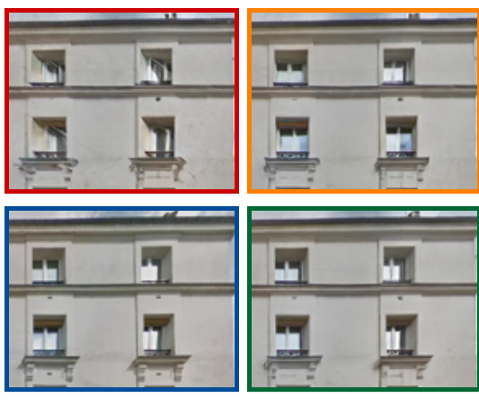

Yiangos Georgiou

Plateia Dimarchias 23, CYENS CoE
Nicosia, Cyprus
Yiangos Georgiou is a research associate at Visual Computing Group at CYENS, where he works on deep learning approaches for realistic city texture generation and Urban Environment Understanding. Currently, he is a PhD candidate in the Department of Computer Science at the University of Cyprus, under the supervision of Dr. Melinos Averkiou and Dr. Tom Kelly.
Yiangos holds a M.Sc.(2019) in Artificial intelligence from the University of Amsterdam. During this course, he attended courses on various disciplines of artificial intelligence such as Machine Learning, Natural Language Processing, Data Mining Techniques, Computer Vision and autonomous Multi-Agent Systems.
He received his B.Sc.(2017) in Computer Science at the University of Cyprus where he acquired the main principles of programming, algorithms and software development.
news
| Oct 24, 2023 | Our work on conditional facade synthesis via selective editing is accepted in WACV 2024. FacadeNet: Conditional Facade Synthesis via Selective Editing. |
|---|---|
| Dec 1, 2021 | Our paper on Projective Urban Texturing is accepted in 3DV 2021. Projective Urban Texturing. |
selected publications
-
FacadeNet: Conditional Facade Synthesis via Selective EditingIEEE/CVF Winter Conference on Applications of Computer Vision (WACV), 2024
 Projective Urban TexturingIn International Conference on 3D Vision (3DV), 2021
Projective Urban TexturingIn International Conference on 3D Vision (3DV), 2021